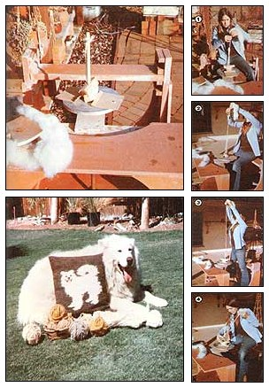

Spin Wool With A Potter's Wheel
Making do with a potter's wheel to spin wool. Samoyed dog hair can also make good spinning 'wool.'
January/February 1980
When any craftsperson/artist gets involved in more than one line of creative endeavor, it's always rewarding and economical if he or she can use the tools on hand-in an original way-to satisfy the demands of the new project. It was just such a situation that inspired me to turn my potter's wheel into a spinning wheel.
You see, I had been spinning and weaving (with a homemade Navajo spindle) for a year or so, using the combings from my lady Samoyed, Tika. However, the dog's "wool" output had become so voluminous that I seriously began to consider either buying or making a spinning wheel, even though the former proposition involved more money than I could easily afford and the latter required too much time.
A HANDY SOLUTION
Then one day it occurred to me that I already had a piece of equipment that went round and round. Realization begat action, and-barely an hour later-I'd developed a simple spinning device that was based on my potter's kick wheel!
When I began to contemplate this machine's spinning potential, I envisioned having to remove the wheelhead and attach something directly to the exposed shaft. An attempt at that, however, indicated that my yarn would tend to pick up grease from the shaft . . . and that the conversion would create unwanted complications when I was ready to switch back to ceramic work.
Luckily, my Brent wheelhead has symmetrically arranged pins (used for the addition of plaster bats) to which-I figured-I could affix a readily removable spinning rig.
Since I'm more familiar with the simple operation of a hand-or drop-spindle than with the workings of a conventional spinning wheel, I went scrounging for a dowel (or something similar) to use for the vertical shaft of my prototype spinner. What caught my eye was a wooden food masher that measured about a foot high.
I secured the implement to the wheelhead with a bracket made from a 6" X 18" flap from a corrugated cardboard box. (The size was somewhat arbitrary . . . the carton just happened to be handy.) First I pushed the handle of the masher through a hole cut in the center of the bracket . . . folded the cardboard down over the base and then flat onto the wheelhead ... and fastened the pins through corresponding holes on each end of my rectangle. I then made a pair of parallel cutsabout an inch apart and two inches deep-on each vertical edge of the cardboard . . . folded the resulting flaps inward ... and clasped them around the masher base with sturdy rubber bands. (Besides holding the assembly upright, the cardboard brace created a space for winding the newly spun yarn.)
And that was it! I could hardly wait to card up some "Sammy-wool" for the big test!
GIVE IT A SPIN!
After tying on a prespun length of yarn for a starter (Photo 1) and half-hitching it to the top of the shaft, I just kicked the wheel into a clockwise direction . . . twisted on the new wool . . . and commenced to spin (Photo 2).
It took a while to get used to being able to feed fiber continuously into the strand without working in fits-and-halts as I'd had to with my former all-by-hand technique. But pretty soon I was able to stand up on the framework and draw out a length nearly all the way to the ceiling (Photo 3) before winding it onto the base (Photo 4).
I didn't know it at the time, but I've since learned that the principle of my potter-spinning-wheel operation is very similar to that of the penguin-quill wheel or the old-fashioned"great wheel" spinning machine . . . only my rig works at a different angle than did the traditional devices. Furthermore, my flimsy cardboard-and-masher contraption functions so well that I'm not inclined to design a "finished" model.
Unfortunately, the pinholes on potter's tool wheelheads aren't always symmetrical (and some heads have no holes at all), but I bet many of you enterprising MOTHER readers could-with a little work-come up with ideas to produce artful little spinning assemblies out of such machines anyway! An electric wheel could also be utilized for spinning, but since the direction of the powered units isn't reversible-the device would wind yarn counterclockwise and produce (in spinner's jargon) an "S" twist instead of a "Z" twist.
Despite my new "mechanized" spinner, I still have a big backlog of dog hair to deal with . . . but "makin' do" is, at least, makin' a dent in it!
THE HAIR OF THE DOG
If you want to have a homegrown source of wool but aren't able to keep sheep, consider a Samoyed as your next pet. The canines produce fine undercoat hair which is periodically "dropped". At sheddin' time, the dogs' fur comes out in copious brushfuls, and-being pure white is receptive to a wonderful range of colorful dyes.
In addition, most Sammies are without the usual "doggie odor", so articles woven from their wool shouldn't attract the attention of other canines. (Many of the northern-bred varieties of dogs-such as Norwegian elkhounds, malamutes, keeshonds, etc.-also possess relatively odor-free double coats . . . in a wide range of colors that are suitable for spinning.)
I've had good results with combings from a silver poodle and an Irish setter, too ... and when friends recently clipped their English sheepdog for the summer, I spun its combined guard hair and undercoat into some lovely, coarse, heather-gray yarn.
Furthermore, even if you can't-for whatever reason-keep a dog around, some grooming parlors will save combings and clippings for you on request. So most any interested spinner ought to be able to find plenty of "woof wool" to turn into beautiful .and practical knitwear!
|
 |
 |
|